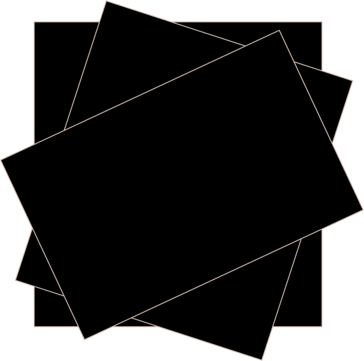
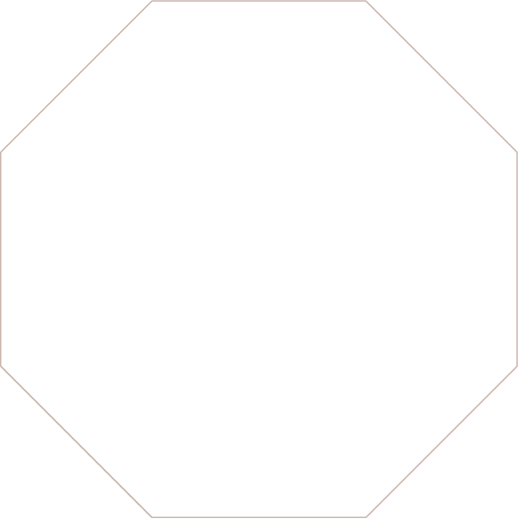
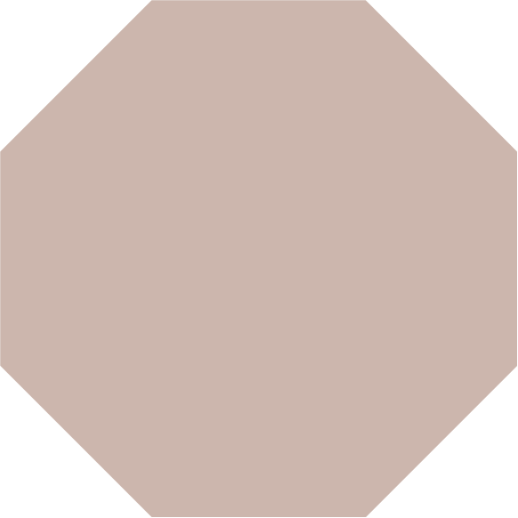

Valorizzare
gli scarti
I vasi EDRO nascono da un'idea semplice. Gli scarti
dell'azienda sono una fonte preziosa e di qualità,
perchè non riutilizzarli? Partendo da lastre di dimensioni variabili
i vasi mutano nelle dimensioni e negli spessori
conferendo ad essi l'unicità, punto forte del brand.
Oltre alla loro particolarità nella dimensione e nella forma sono
realizzati a mano e questo rende l'impatto ambientale minimo,
in quanto il materiale viene di scarto riutilizzato.

Design ispirato
dai poliedri
Le forme dei vasi creano un forte contrasto tra la
perfezione della geometria e l'imperfezione della
texture ossidata. Le figure sono senza tempo e
si adattano in molteplici ambienti, esse variano dalla semplicità
del cubo alla particolare forma del tetraedro troncato.

Processo di
ossidazione
La speciale texture ossidata racconta la storia dei vasi. Vengono
trattati senza prodotti dannosi per l'ambiente nell'arco di settimane e il naturale processo
della corrosione dona un ulteriore segno distintivo ai vasi. In base all'ambiente in cui
avviene il trattamento, si modifica il risultato della corrosione.
Il prodotto finale è un
oggetto unico nel suo genere, che accoglie piante e fiori e soprattutto dura nel tempo.
